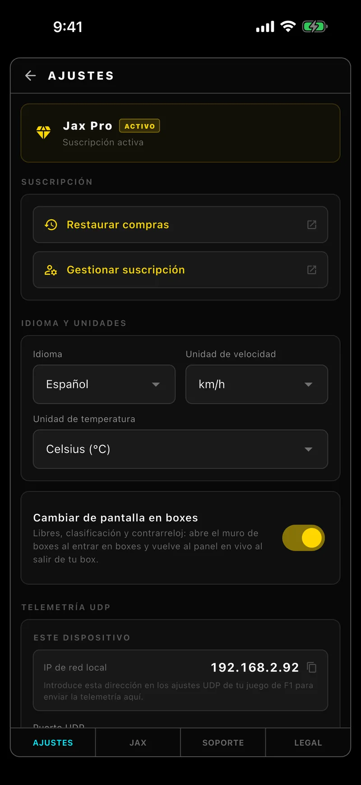

Cómo funciona
Qué es gratis y qué incluye Jax Pro
Gratis te permite correr, grabar y ver tu actividad. Jax Pro te ayuda a entender, revisar, gestionar y mejorar tu pilotaje.
Gratis para siempre
- Todo el panel, incluida su traza en vivo a pantalla completa
- Muro de boxes: toda la CLASIFICACIÓN del TIMING para cada piloto, GAME, ME, y SETUP con tus reglajes por nombre
- Preparar la sesión → Acerca de: la vista general del circuito — mapa con la línea de salida/meta, longitud, curvas, zonas DRS y reglas 2026
- El guardado de cada sesión; nunca se bloquea
- Historial de sesiones: todas tus sesiones en la lista, con estadísticas de todas ellas
- Tu sesión más reciente completa: momentos clave, clasificación, historial de vueltas, trazas y repetición
- Biblioteca de reglajes: todos los reglajes que has usado, en la lista
- Jax: los avisos urgentes de seguridad — coche de seguridad, VSC, banderas roja, amarilla y azul, una penalización que te imponen, un coche parado delante, el tráfico al salir de boxes — y tu vuelta en la línea
- El cronometraje en directo y el registro de vueltas en contrarreloj
- Los consejos de pilotaje, las demos integradas, los ajustes, la privacidad, el soporte y la copia de seguridad en iCloud
Añadido por Jax Pro
- Jax, tu ingeniero de carrera completo: coches que se acercan, tráfico, neumáticos, combustible, energía, ventanas de parada, daños, clima y ritmo
- Muro de boxes: TIMING EN VIVO, COCHE, MAP y TRACE (con comparación de dos vueltas)
- Todas tus sesiones anteriores completas: detalles, momentos clave, historial de vueltas, trazas y repetición
- Los valores de tus reglajes, sus comparaciones, nombres y valoraciones, allí donde aparezcan
- Preparar la sesión: curvas, prioridades de reglaje, neumáticos, pérdida en boxes y análisis del circuito, Mis datos, y tu plan de sesión
Prueba y planes
Jax Pro se ofrece en suscripciones mensual y anual del App Store, ambas con una prueba gratuita de 14 días para las cuentas que cumplan los requisitos. Durante la prueba, todo lo anterior está disponible. Cancela antes de que termine y no se te cobra.
Los requisitos, el precio en tu país y la oferta exacta los muestra la hoja de compra de Apple antes de confirmar. Apple cobra y renueva la suscripción hasta que la canceles en los ajustes de suscripciones de tu cuenta de Apple.

Suscribirse y restaurar
Cada función bloqueada abre la pantalla de suscripción con una frase sobre lo que desbloquea, los planes y la restauración de compras (¿Ya suscrito? Restaurar). En cuanto te suscribes, vas directamente a lo que tocaste, sin reiniciar. La tarjeta Jax Pro de los ajustes muestra tu estado.
Tus datos nunca quedan secuestrados
Gratis nunca limita lo que se guarda. Cada sesión y cada reglaje se conserva y aparece en la lista, sean cuantos sean. Una sesión nueva pasa a ser la que puedes abrir completa; la anterior conserva su lugar en la lista. Puedes borrar una sesión en cualquier momento.
Si termina una suscripción, no se borra, recorta ni reordena nada. Vuelve a suscribirte y se abren los mismos registros.
Pruébalo todo en las demos
Las demos integradas (Ajustes → SOPORTE → Explorar las demos de JMD) muestran cada vista de Jax Pro y el ingeniero de carrera completo con datos de ejemplo, para que veas lo que obtendrías antes de decidir. Una demo nunca concede ni registra una suscripción.